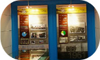

경기도의회의 지원기관 경기도의회 사무처
경기도의회사무처는 도의회의 활동을 지원· 처리하는 행정기관으로서 의회사무처장을 중심으로
의정활동 홍보, 의회의 예산· 시설관리, 회의운영, 의원 입법활동 지원 등의 업무 처리합니다.
버스이용시 노선번호, 전체구간 구간정보 안내
| 부서 |
주요업무내용 |
| 총무 담당관 |
- 1. 주요업무계획의 수립과 조정
- 2. 문서보안과 공인의 관리
- 3. 사무처 직원의 인사와 복무에 관한 사항
- 4. 경기도의회 의원과 사무처 직원의 복리후생에 관한 사항
- 5. 의전과 대외협력교류에 관한 사항
- 6. 청사 시설유지관리에 관한 사항
- 7. 예산의 편성‧집행‧결산에 관한 사항
- 8. 전국 시‧도의회의장협의회 관련 사항
- 9. 의원에 대한 각종 행사와 관련된 사항
- 10. 물품수급 및 차량유지 관리에 관한 사항
- 11. 사무처 대회의실 대관에 관한 사항
- 12. 그 밖에 다른 담당관의 소관에 속하지 아니하는 사항
|
| 언론홍보 담당관 |
- 1. 경기도의회 언론(홍보)에 관한 기본계획 수립 및 집행에 관한 사항
- 2. 의정활동 홍보와 인터뷰 추진
- 3. 간행물과 의정백서 발행 기본계획 수립
- 4. 정보화위원회 및 간행물편찬위원회 운영에 관한 사항
- 5. 의회 홈페이지 구축과 운영 관리
- 6. 의정활동에 대한 영상기록 및 사진촬영 관리 운영에 관한 사항
- 7. 의회 도서관 관리 운영에 관한 사항
- 8. 홍보영상 및 홍보물 제작에 관한 사항
- 9. 미디어홍보 전략기획 및 세부실행계획에 관한 사항
- 10. 출입기자 취재지원 및 브리핑룸 운영관리에 관한 사항
|
| 의사 담당관 |
- 1. 회기운영기본계획의 수립과 조정
- 2. 정기회·임시회의 소집공고와 의사진행을 위한 지원 보조
- 3. 본회의장의 사용과 조정
- 4. 의원의 대외업무참여에 관한 협조(각종 위원회 위원의 추천을 포함)에 관한 사항
- 5. 교섭단체와 의석배정에 관한 사항
- 6. 의원의 청가(請暇)에 관한 사항
- 7. 회의장의 질서유지와 방청 참관 등에 관한 사항
- 8. 각종 의안의 처리와 의결문서의 관리
- 9. 의안의 접수, 회부 및 이송에 관한 사항
- 10. 각종 위원회 의안의 처리와 회의상황의 종합
- 11. 결산검사위원의 위촉에 관한 사항
- 12. 회의록의 작성‧발간 및 보존‧열람에 관한 사항
- 13. 본회의장 전자회의시스템 운영 및 유지관리에 관한 사항
- 14. 청소년의회교실 운영에 관한 사항
- 16. 의안정보시스템 운영에 관한 사항
- 17. 의회 의정모니터 운영에 관한 사항
- 18. 행정사무감사 및 조사 업무 지원에 관한 사항
|
| 도민권익 담당관 |
- 1. 민원서비스 지원 추진계획 수립에 관한 사항
- 2. 민원처리 관리에 관한 사항
- 3. 도의원 공약사항 관리에 관한 사항
- 4. 도민 및 도의원 의정 관련 제안 지원에 관한 사항
- 5. 청원·진정서의 접수 분류와 처리에 관한 사항
- 6. 의정민원 현장조사에 관한 사항
- 7. 일반 및 고충민원 상담에 관한 사항
- 8. 의정만족도 조사실시에 관한 사항
- 9. 민원행정서비스 매뉴얼 작성 관리 등에 관한 사항
- 10. 지역상담소 지원 및 관리에 관한 사항
- 11. 지역상담소 건의사항 처리에 관한 사항
- 12. 지역상담소 홍보에 관한 사항 등
- 13. 의원의 등록에 관한 사항
- 14. 의원의 교육 및 연수에 관한 사항
- 15. 의원 재산등록 및 겸직 등 의무사항 신고에 관한 사항
|
| 협치지원 담당관 |
- 1. 도정 및 교육행정 협치 지원에 관한 사항
- 2. 시민사회 및 도민단체 등 협치 지원에 관한 사항
- 3. 의원교육, 연찬회, 워크숍, 토론회 등 지원에 관한 사항
- 4. 교섭단체 일반행정지원에 관한 사항
- 5. 도정 및 교육행정 관련 정책분석에 관한 사항
- 6. 교섭단체 등 요청 정책현안 분석지원에 관한 사항
- 7. 정책이슈보고서 정기발간에 관한 사항
|
| 입법정책 담당관 |
- 1. 의회입법정책 등에 관한 장기·현안과제의 조사와 분석 등 지원에 관한 사항
- 2. 지방자치제도에 대한 자료조사·분석·연구 등 의정활동 지원에 관한 사항
- 3. 의정에 관한 학술연구, 용역, 조사, 자문에 관한 사항 등
- 4. 의원발의 의안의 입법지원에 관한 사항
- 5. 집행부 발의 안건 등에 대한 검토 지원에 관한 사항
- 6. 상임위원회가 요청한 조례안의 입안이나 검토에 관한 사항
- 7. 지방의회관련 자료의 수집과 분석 및 제공 등에 관한 사항
- 8. 의원연구단체의 등록 및 운영지원
- 9. 법제지원에 관한 사항 등
- 10. 의회관련 쟁송업무의 처리, 입법 및 법률고문 운영에 관한 사항
|
| 예산정책 담당관 |
- 1. 예산정책의 수립 및 조사와 분석
- 2. 도ㆍ교육청 예산안ㆍ결산ㆍ기금운용계획안ㆍ기금결산 등 분석에 관한 사항
- 3. 예산·기금이 수반되는 조례안 등 의안에 대한 비용추계
- 4. 도‧교육청 출자‧출연기관의 주요사업에 대한 분석
- 5. 지방재정운용 및 경제동향의 분석
- 6. 중·장기 재정소요 추계 분석
- 7. 국내외 지방재정운용 및 지역경제 동향 분석
- 8. 국내외 재정제도에 대한 조사 및 분석
- 9.기타 예산 및 재정정책 관련 자료의 수집ㆍ지원 등에 관한 사항
|
| 각 전문위원 |
- 1. 조례안 예산안 청원 등 소속위원회의 소관안건에 대한 검토보고
- 2. 각종 의안을 비롯한 소관사항에 관한 자료의 수집 조사 연구와 소속위원회 위원에 대한 자료의 제공
- 3. 소속위원회에 대한 질의자료의 제공
- 4. 소속위원회 의사진행의 보좌
- 5. 소속위원회가 주관하는 공청회 세미나 간담회 등의 운영
- 6. 소속위원회 자료실의 운영
- 7. 위원회 회의실 사용과 조정
- 8. 그 밖에 소속위원회의 소관에 관한 사항
|
의회역사관
의회사료관에는 1956년 개원한 초대의회부터 2014년 개원한 제8대 의회에 이르기까지 경기도의회가 걸어온 발자취를 전시하고 있습니다.

의회도서관
의원의 입법활동과 전문지식 함양을 위해 약 5만여권의 장서와 정부간행물, 전문서적, 시청각 자료를 비치하여 의원은 물론 도민에게도 개방하고 있습니다.
자료관리 담당자
- 홍보담당관 홍길동
- 대표전화 031-000-0000